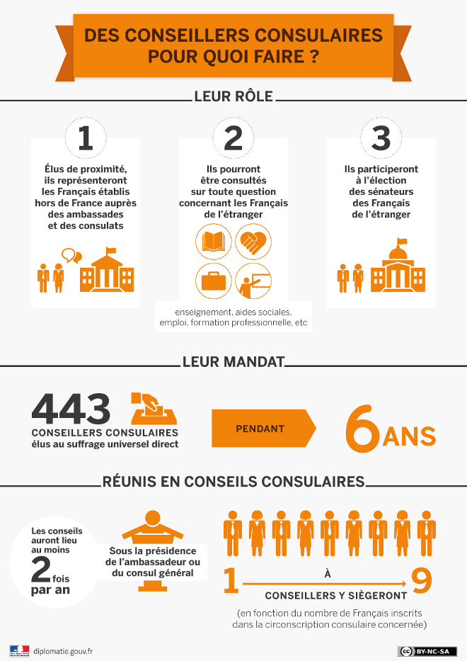

I consiglieri dei francesi all'estero sono eletti di prossimità, creati dalla legge del 22 luglio 2013. Eletti a suffragio universale diretto su liste paritarie, per un mandato di 6 anni, dai francesi iscritti nelle liste elettorali consolari, sono attualmente 443 distribuiti in 130 circoscrizioni nel mondo (433 alle prossime elezioni di maggio 2026).
Chi sono?
- Cittadini francesi residenti all'estero, eletti dai loro connazionali francesi all'estero
- Ogni circoscrizione consolare conta da 1 a 9 consiglieri, in funzione del numero di francesi iscritti
- Esercitano il loro mandato in modo largamente volontario, con un'indennità forfettaria modesta destinata a coprire le spese di viaggio
Cosa fanno quotidianamente?
- Rappresentano e accompagnano i francesi della loro circoscrizione nelle loro pratiche presso l'ambasciata o il consolato
- Siedono nel consiglio consolare, l'istanza locale che si riunisce almeno 2 volte l'anno per trattare temi concreti: borse scolastiche, assistenza sociale, occupazione e formazione professionale, sicurezza, sostegno alle associazioni (STAFE)
- Emettono pareri consultivi e formulano raccomandazioni su tutte le questioni che riguardano la vita dei francesi nella loro circoscrizione
- Trasmettono i bisogni e le preoccupazioni dal territorio all'amministrazione, al governo e ai parlamentari
- Contribuiscono alla vita civica e associativa locale e sostengono iniziative concrete
Quale ruolo nella rappresentanza nazionale?
- Sono grandi elettori e partecipano all'elezione dei 12 senatori dei francesi all'estero
- Tra i 443 consiglieri, 90 sono eletti dai loro pari per sedere all'Assemblea dei Francesi all'Estero (AFE), l'assemblea consultiva nazionale che dialoga direttamente con il governo su tutte le politiche pubbliche riguardanti i francesi all'estero
- Lavorano in collegamento con gli 11 deputati dei francesi all'estero
In sintesi, sono l'equivalente dei consiglieri comunali, ma per le comunità francesi all'estero - i vostri interlocutori diretti a livello consolare.